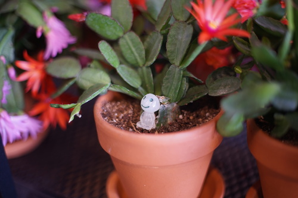
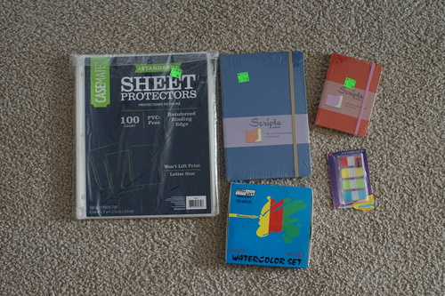

i am not at sakuracon if you are looking for me. i cant be more disinterested in going to a convention that requires masks. i'll wait.
it's been snowing off and on all week... i hope the flowers aren't all h*cked. it is currently snowing as i write this ;a;
we got a nice day last week so we went on a walk to look at the flowers. the cherry blossoms were starting! idk if i want to take hina out or my DD again for them because honestly i'm terrified of dropping hina out of a tree.
a new little store opened up downtown! i made ryan check it out with me. i was surprisingly pleased at what they offered! they have a few racks of loose leaf teas, a few little plants, bulk "natural" goods, and some locally made cr*p. I got 1oz of blue tea and 1oz of coconut assam. the blue tea is very fun because it turns purple with acid! unforunately all i have is vinegar and it makes it taste awful.
the store was very cute though! ill have to go back and support them so they dont fail like the last 2 businesses that have been in that building
and now, what youve all been waiting for...
Ryan asked me to look for these about a month ago and i finally found them!
ryan just ran out of these! lucky!
the inner part is ripped out but i want to keep some doll clothes in it once it's replaced
a gift for someone else! my name does not include K
Ryan's!
Also Ryan's!
the juban was flimsy as expected so i sewed a folded ribbon and piece of lace over it for a haneri. i finished a bight pink obi for her too. i was just going to handsew it but handsewing is miserable so i had my machine struggle through it. the needle became less misaligned as it warmed up.
i've been having so much trouble with her kitsuke. i have some padding under it but it keeps twisting so i have it secured with a rubber band. her obi is still not flat though so i'll need to work on it more.
her hands and heet shipped the other day, and the tracking says they should arrive today, but they haven't made it to my town so ill just hope for monday!
yes i am that awful to put an animated png on my site. enjoy, nerds! i separated my volks info from the generic bjd guide and put it all in its own shrine. more than half of bjd lovers who speak english dont give a c*rp about volks anyway. but they should!